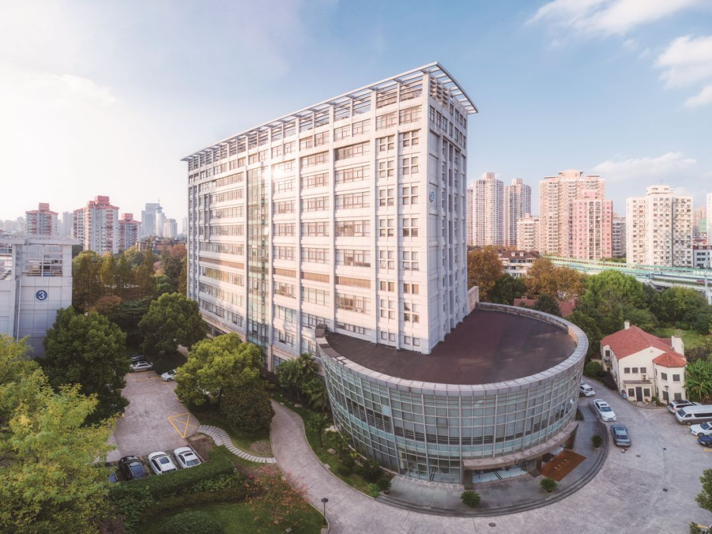
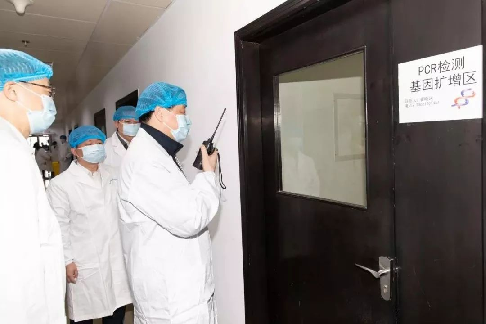
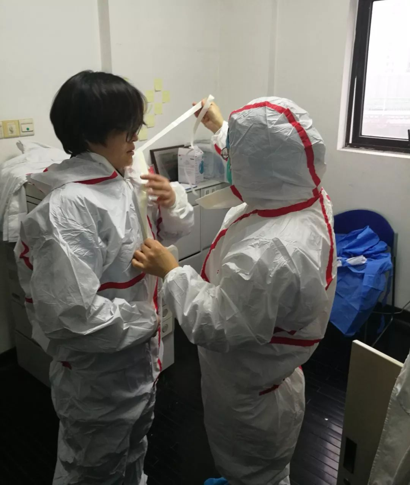
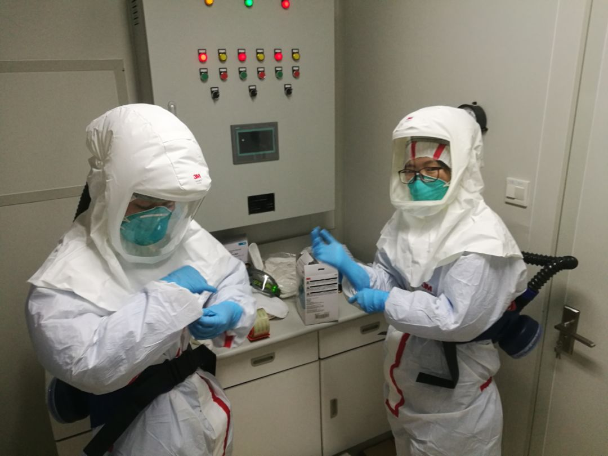

武汉疑似患者受关注 确诊难待解决
原文链接 备份链接 【财新网】（记者 黄姝伦 赵今朝）新型冠状病毒感染肺炎疫情还在爆发式增长，武汉1月23日上午10点宣布交通封城。官方披露，截至1月23日24时，全国确诊病例达850例， 26例死亡绝大部分集中在武汉市，其中河北省出现首 …

实验室检测员，将在病毒检测实验室里度过24小时。这里的不眠之夜，与2000多万上海市民息息相关。
文 | 黄 祺
2名流行病学专业人员，一辆专车，一个按照高致病性病原微生物A类包装标准密封包装的特殊盒子，盒子里，是一名疑似新型冠状病毒感染的肺炎病人样本。

非常时期，除了全市医疗机构，上海市疾控中心，是另一个“不打烊”的机构
这个盒子，被交到上海市疾控中心质量管理处生物样品收样室，收样室每天两次把陆续收到的疑似病例样本送进病毒检测实验室。正常情况下，24小时后，一份样本是否存在新型冠状病毒的结论，就可以从实验室报出，为病人的后续治疗，提供最关键的依据。

上海市疾控中心病原生物检定所内，疑似新型冠状病毒感染的肺炎病例样本转运中
当我们为“逆行”的医生泪目时，在看似平静的一间实验室里，疾控系统的实验室检测人员，同样正在为了尽快控制新型肺炎疫情的蔓延，从事着高风险、高强度的工作。
他们的工作，一样值得我们致敬！

今天上午，应勇一行来到上海市疾控中心，慰问工作人员，并实地察看中心实验室，与正在进行病毒核酸检测的工作人员连线通话。应勇要求科学有效做好疫情防控，制订周密防控措施，指导基层开展好防控工作
确诊新型冠状病毒感染的肺炎，
靠他们拿出最关键证据
“我昨天8点穿上防护服进实验室，下午2点半结束第一批样本的检测，出来吃了午饭。晚上7点第二次穿上防护服进实验室，做完所有样本检测出来是凌晨1点半。”上海市疾病预防控制中心病原生物检定所副所长李崇山，完成昨天24小时的实验室工作，今天继续在办公室上班——非常时期，除了全市医疗机构，上海市疾控中心，是另一个“不打烊”的机构。
李崇山介绍，新型冠状病毒感染的肺炎的确诊，需要实验室提供的关键性检定结论。按照国家卫生健康委《新型冠状病毒感染的肺炎疫情防控方案（试行）》规定，上海市新型冠状病毒感染的肺炎的实验室检测全部由市疾控中心承担，也就是说，全市所有医院发现的疑似病人，医生采集样本后，这些样本最终都会被送到上海疾控中心病毒检测实验室。
从1月16日至今8天，实验室从未熄灯，病毒检测实验室一共准备了7组检测人员，每班6-8人，一班24小时。
最近几天，全市送检的样本量基本稳定在30多个病例，每个病例有两种样本——患者咽拭子、鼻拭子样本。这意味着每一班实验室工作人员要接触数十份疑似新型冠状病毒感染的肺炎病例样本。

每一份样本检测要经历五个主要步骤：1.检测人员对样本进行标记、分装；2.核酸提取；3.荧光定量PCR体系配制；4.上机检测；5.输出判断报告。五个主要步骤中，前三个需要人工操作。
“实验室检测工作存在较高的风险，但我们会严格防护，规范操作，将风险控制在零。”李崇山说，目前样本检测采用的是核酸检测技术，按照《新型冠状病毒实验室生物安全指南》要求，核酸检测实验在P2实验室中进行，每位检测人员采取生物安全三级个人防护。
十多分钟就会湿身的隔离服，
他们要穿6小时以上
今天是除夕，按照排班，周艳秋、崔心怡、褚维、陈敏、陈伟鑫五位实验室检测员，将在病毒检测实验室里度过24小时。这里的不眠之夜，与2000多万上海市民息息相关。
按照钟南山院士的说法，目前新型冠状病毒感染的肺炎疫情还处于“爬坡”期，这意味着，最近几天，确诊病人还会不断增加，而且增加的速度可能会明显加快。对于检测人员来说，实验室里的奋战不会因为春节而停歇。

李崇山告诉记者，生物安全三级防护服穿上十多分钟里面的衣服就会湿透，而按照目前的工作量，他们穿上防护服要连续工作6小时以上才可以脱下休息。“我们开玩笑说这叫免费桑拿。”
据介绍，为了应对新型冠状病毒感染的肺炎疫情，上海市疾控中心抽调其他实验室骨干和区级疾控中心人员增援病毒检测实验室，目前病毒检测实验室参与排班的人员共25人。“除夕这一班里的褚维和陈伟鑫，就是分别从黄浦区疾控中心、嘉定区疾控中心抽调的业务骨干。”
李崇山说，这支检测队伍平均年龄35岁，年龄最小的25岁。他们绝大多数为医学教育背景，其中拥有硕士、博士学历的人员超过一半。接到疫情任务，9人主动放弃了回老家过年的计划，毫不迟疑地留在工作岗位。

正是这二十多位年轻的实验室专业人员，承担起上海全市新型冠状病毒感染的肺炎病例样本实验室检测重任，为每一位病人的病因，寻找“铁证”。
预案充分，有条不紊
1月20日晚，国家卫生健康委确认上海市首例输入性新型冠状病毒感染的肺炎确诊病例。但早在1月14日，上海疾控就已经开始着手准备应对可能到来的新型冠状病毒感染的肺炎样本检测任务。
“1月14日，国家卫健委发布相关指南，我们中心立即启动试剂耗材应急采购流程，准备好了新型冠状病毒感染的肺炎样本检测的物资。”李崇山说，除了准备物资，更早之前，张曦所长和滕峥主任就开始对市区两级疾控中心实验室人员进行培训，确保所有流程和人员可以应对上海出现新型冠状病毒感染的肺炎病人的情况。
从李崇山的语气里，记者听不到慌乱疲惫，更多的是有条不紊。“这些年，在市委市政府的领导下，在市卫生健康委的指导下，我们开展了四轮公共卫生体系建设三年行动计划，取得了显著的成效，病原检测技术有了很大的进步，上海疾控在应对新发突发传染病方面有完备的应急预案，我们还开展了多项国家重大专项研究。我们实验室检测的效率和准确性，在全国是名列前茅的，跟发达国家比也不差。我们疾控人将全力以赴打赢防控新型冠状病毒感染的肺炎疫情这场硬仗，我们有信心，确保人民群众生命安全和身体健康。”

▼
大家还都在看这些
▼
转载请在评论区留言，获得授权！
转载时，须注明作者、出处和微信号


原文链接 备份链接 【财新网】（记者 黄姝伦 赵今朝）新型冠状病毒感染肺炎疫情还在爆发式增长，武汉1月23日上午10点宣布交通封城。官方披露，截至1月23日24时，全国确诊病例达850例， 26例死亡绝大部分集中在武汉市，其中河北省出现首 …
原文链接 备份链接 “医务人员，有很多做公共工作的（职业），一个人得病以后可能传染很多人。”国家卫健委高级别专家组成员曾光提醒，“所以每个行业都得行动起来，千万别带病工作、带病旅游，这是非常危险的。” 全文4811字，阅读约需8分钟 ▲ …
原文链接 备份链接 截至20日晚上20点，境内累计确诊新型冠状病毒感染肺炎病例218例，疑似病例7例，死亡4例，治愈出院25例。 武汉共有15名医务人员确诊为新型冠状病毒感染的肺炎病例，另有1名为疑似病例。 国家卫健委高级别专家组组 …
原文链接 备份链接 这注定是一个难捱的春节。 截至1月23日24时， 全国确诊新型肺炎病例830例， 死亡25例。 截至1月23日晚，中国新型肺炎疫情地图（来源：丁香医生） 同时，国际确诊案例也陆续出现。 截至1月23日，数据如下： 泰 …
原文链接 备份链接 根据国家卫健委的通报，截至1月23日零点，共统计到国内新型冠状病毒感染的肺炎确诊病例571例，其中超过400例来自湖北。死亡17例，均来自湖北。此刻的武汉面临以下问题：试剂盒数量不够、确诊艰难、床位短缺、高度疑似患者 …